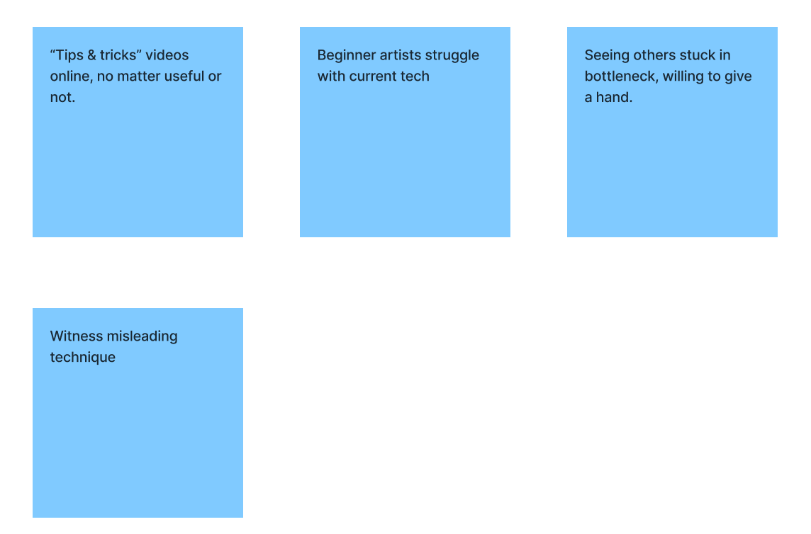
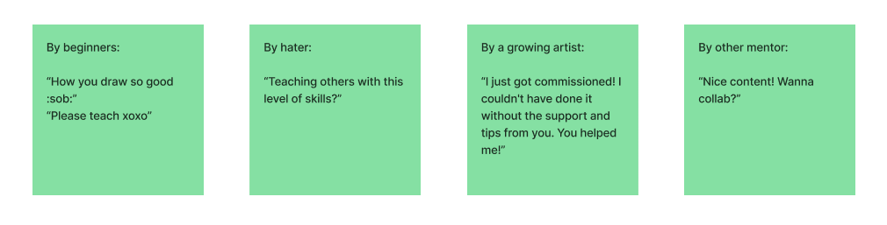
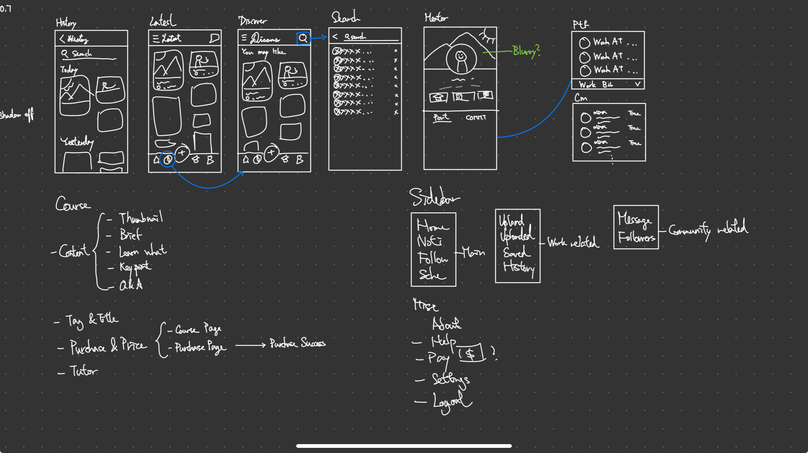
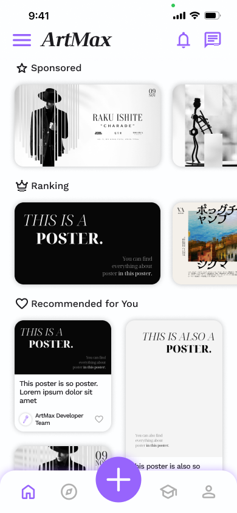
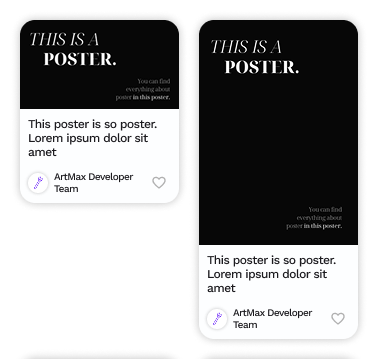
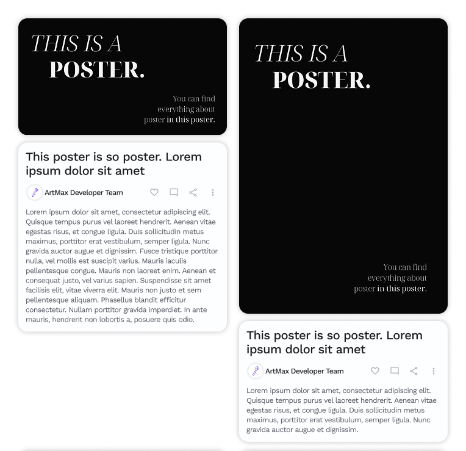
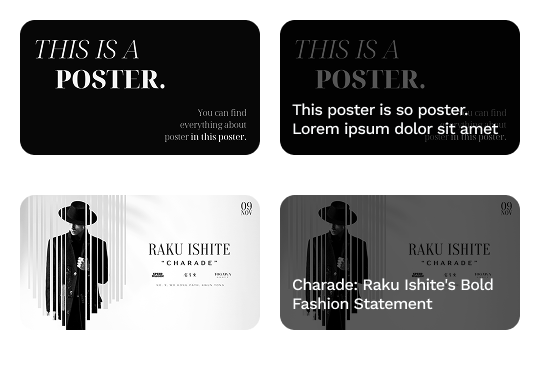
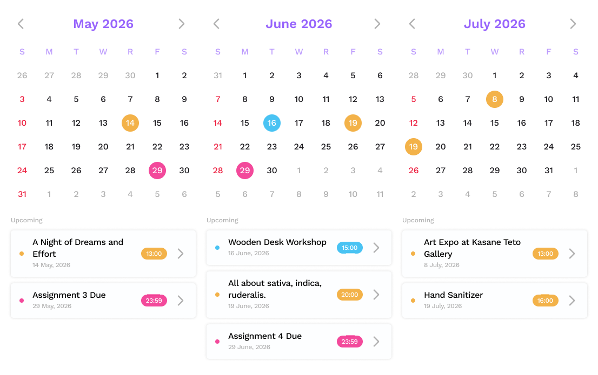
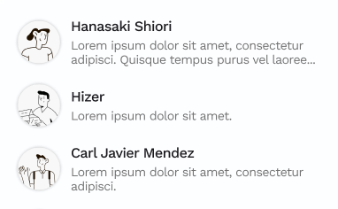
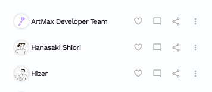

Project Overview
ArtMax is a social platform designed specifically for artists at all skill levels. It combines a clean art-sharing feed with structured mentorship opportunities, helping beginners find guidance and experienced artists share their knowledge. Unlike cluttered mainstream platforms or intimidating portfolio sites, ArtMax offers a welcoming space where artists can learn, grow, and connect through organized lessons, events, and community support.
The Problem
Fragmented Artist Communities
For many artists, especially beginners, existing social media platforms are frustrating. Sites like Instagram, Threads, or X are cluttered with noise from people who are not artists. On art focused sites like Pixiv or DeviantArt, constantly seeing extremely talented work can feel discouraging instead of inspiring; a newcomer may feel intimidated and hesitate to share their own art. Meanwhile, other platforms are often too niche, focusing on only one type of art (for example, only anime or only realism), leaving no room to explore different styles.
Scattered Learning Resources
Another issue is that art tutorials and tips are scattered across dozens of sites. YouTube, blogs, Discord servers, there is no clear starting point or logical sequence of lessons. This chaos leaves beginners without structured mentorship opportunities. They miss out on step-by-step guidance and peer feedback that would truly help them grow.
Research & Discovery

Artists struggle with chaotic tutorials, misleading techniques, and no way to help peers.

Beginners beg for lessons, haters doubt skills, and growing artists credit mentorship for success.
User Research
For user researching, I spoke with artists at different skill levels. From beginners who had never used digital tools to seasoned illustrators looking to mentor. Each person revealed unique pain points and hopes.
Beginners struggle with chaotic tutorials and misleading techniques, while experienced artists want to help but lack structure. Quotes ranged from “Please teach me” to haters doubting skills, yet one growing artist credited mentorship for landing a commission, proving the need for a simple, mentor‑friendly platform.
Target Audience
ArtMax serves three types of users. First, beginner artists who feel lost among talented creators on sites like Pixiv or DeviantArt and lack a clear path to improve. Second, tech-illiterate artists who find mainstream social media overwhelming and need a simple, minimalistic interface. Third, experienced artists who want to become mentors, who have skills to share (in Procreate, Photoshop, Figma, etc.) and are looking for a structured way to teach and connect with learners.
Ideation & Exploration

Brainstorming idea of features in ArtMax on memo papers.
Brainstorming
Based on our user research, we knew beginners felt lost among chaotic tutorials and misleading techniques, while experienced artists wanted to help but had no structured way. So we gathered around memo papers and asked: “What would a truly helpful art platform look like?”
We wrote down every idea: a simple art feed, event listings, direct messaging, and most importantly, a mentorship feature where learners could find lessons and mentors could offer guidance. The messy pile of sticky notes slowly turned into the core features of ArtMax.

Low‑fidelity sketch of ArtMax’s core screens and navigation.
Low‑fidelity Wireframes
Before opening Figma, I sketched rough wireframes on GoodNotes. This helped me think about layout and user flow without getting distracted by colors or fonts. I mapped out the main pages: a home feed for discovering art, a search screen to find artists or events, and a dedicated mentorship section. For the mentor page, I included a mentor’s portfolio, student comments, and a clear way to contact them. I also sketched a sidebar navigation to keep the interface clean for tech‑illiterate users.
Next to the wireframes, I listed all the information a course page would need – title and tags, mentor details, thumbnail, brief description, learning objectives, key points, a Q&A section, and a price or purchase option. This checklist kept me focused on what content each screen had to support before moving to high‑fidelity design.
High‑Fidelity Design

Main page of ArtMax.
Visual Direction
I chose a minimalistic style for ArtMax to reduce visual clutter and make the interface feel calm and approachable. This is especially important for tech illiterate artists who may feel overwhelmed by busy designs. The colour palette is mostly white, creating a clean canvas that lets artwork and event photos stand out. A single purple accent is used sparingly for interactive elements like buttons, links, and active navigation icons.
For typography, I selected Work Sans as the primary font for body text, labels, and descriptions because of its high legibility and modern, neutral look. To give the platform a distinctive personality, I used Wittgenstein for special titles, such as the platform name "ArtMax" and the main navigation labels (Discover, Mentoring, Personal). This contrast between a functional sans serif and a more expressive display font helps establish visual hierarchy while keeping the overall interface clean.
Key UI Components & Modular Design System
I built a modular design system in Figma to ensure consistency and speed up my workflow. Each key UI component is a reusable asset with auto layout and variants.

Vertical scrolling post for main feed

Expanded post with details and actions

Thumbnail post for horizontal scrolling

Calendar component for event dates
User card for mentorship and messages
For the content feed, I created two types of post components: a vertical scrolling post for the main feed, and a smaller thumbnail post for horizontal scrolling at the top of the feed. When a user holds a post, an expanded version appears with more details and actions, which is built as a separate component. I also designed a calendar component for event dates and a user card for mentorship listings and direct messages, showing a profile picture, name, and the membership status.

Vertical scrolling post for main feed

Expanded post with details and actions
By altering variants, changing one master component updates every screen instantly. This modular approach saved time and kept the interface visually unified.
For more design examples, including additional components and screen variations, please check the gallery section above.
Prototype
After completing the high‑fidelity design, I built an interactive prototype in Figma to simulate the core user experience. The prototype focuses on two complete flows.
Browsing and Interacting with Posts
From the main page, a user can scroll through a feed of posts – these include artwork sharing posts and event announcements. Tapping any post opens a detail page with full content, including the artwork description or event time, venue, and comments from other users. From this detail page, the user can leave a comment or directly contact the event holder or the artist who posted the work.
Mentorship and Purchase
The user navigates to the Mentoring section, where they can explore available lessons. Tapping on a lesson opens the lesson detail page, showing information such as duration, price, and syllabus. From there, the user can proceed to purchase the lesson. The user can also view the mentor’s profile separately, which includes the mentor’s portfolio and comments from their students.
Interactions and Prototype Fidelity
I added simple but meaningful interactions. Tapping any icon in the bottom navigation bar switches pages with a smooth fade transition. Holding a post reveals an expanded overlay with additional actions, such as saving or reporting the post. Not every secondary button is active, but most of the critical paths for usability testing are fully functional.
A video demo of the prototype is available here.